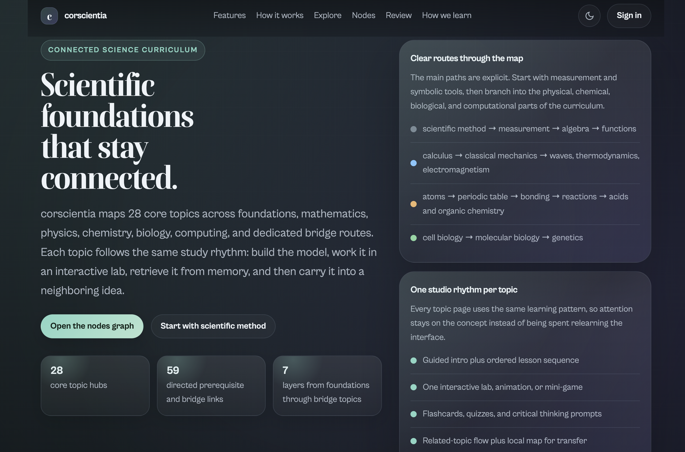
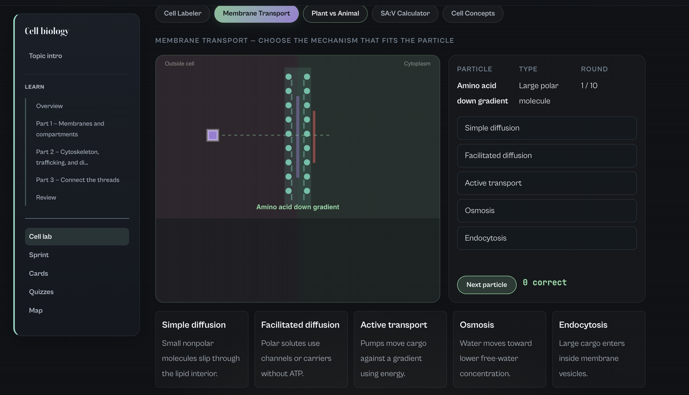
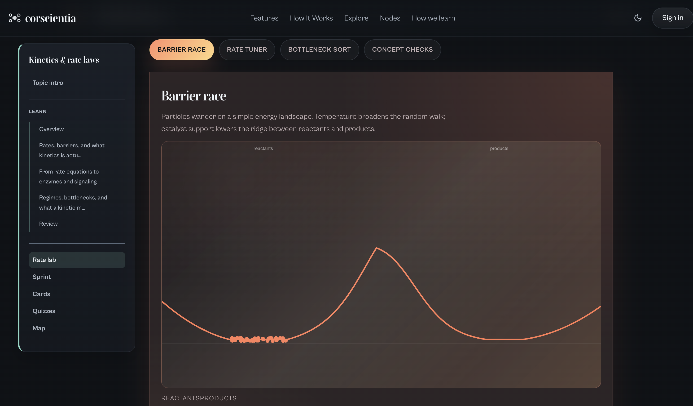
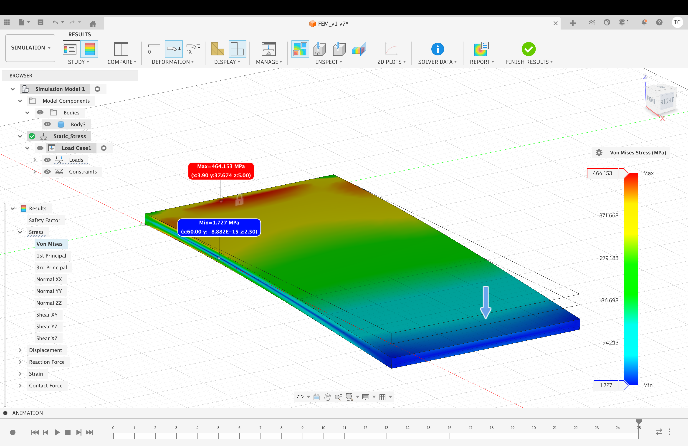

Research track
Publications, papers, and technical prototypes
This lane groups the peer-reviewed publication, current research papers, simulation work, and hardware research prototypes such as Magnetic Master and the FEM metamaterial study.
Demos, drafts, and code collected in one place. Questions? Email 1155232245@link.cuhk.edu.hk.
Research track
This lane groups the peer-reviewed publication, current research papers, simulation work, and hardware research prototypes such as Magnetic Master and the FEM metamaterial study.
Commercial / startup track
This lane covers startup-facing clinical tooling, learning products, mechanical product design, and the macOS utility app work.
Peer-reviewed venue acceptance (oral presentation and proceedings). This is separate from the draft PDFs listed under Papers.
LeCal: Latency-Aware Dataset Curation and Alignment was accepted for oral presentation at the 20th IEEE International Conference on Control & Automation (ICCA 2026) and will appear in the conference proceedings.
A magnetic localization master device prototype with local tracking and hardware demonstrations. The paper, prototype video, and tracking video are bundled directly with the portfolio so reviewers can open them without leaving the page.
Clinical decision-support prototype
ocsina is an OCT-based clinical decision-support startup prototype that converts routine retinal scans into structured biomarker summaries, risk flags, and clinician-friendly reports for neurology workflows, starting with multiple sclerosis.


Connected science curriculum
Corscientia is a learning website that maps core science topics across foundations, mathematics, physics, chemistry, biology, and computing, then turns each topic into a consistent study rhythm with interactive labs and review loops.



Ongoing technical work spanning reinforcement learning, robot perception, embodiment transfer, and hardware-aligned experimentation.
Simulation research project
Conference paper and implementation references for Isaac Lab manipulation experiments under privileged-pose corruption. The project focuses on whether policies can remain usable when pose channels become unreliable at deployment time.

Bundled simulation preview showing the evaluation environment used for the manipulation study.
Robotics systems integration
A reusable ROS2 perception and integration framework for simulation-first robotics workflows. This work is about getting sensing, message transport, and downstream task logic into a cleaner research-ready stack.
Pipeline scope
Designed as infrastructure rather than a single isolated demo.
Draft manuscripts and technical write-ups shared for reference. For the peer-reviewed accepted conference paper (oral presentation and proceedings), see Publication.
Research prototype paper
A hardware-focused paper on the wearable magnetic localization master device, covering how the sensing concept was turned into a working prototype with a usable tracking workflow.
What this paper emphasizes
The videos remain in the dedicated Magnetic Master prototype section above.
Conference draft
This paper evaluates PPO policies under realistic pose outages and asks whether dropout-aware training can preserve manipulation performance when privileged state inputs become unreliable.
Local simulation capture used to preview the manipulation setting discussed in the paper.
Accepted conference paper
LeCal is a practical post-hoc calibration workflow for LeRobot teleoperation datasets. It estimates action-to-state delay, surfaces confidence diagnostics, and exports alignment artifacts for downstream model training.
The PDF here is a working draft; the accepted ICCA 2026 oral and proceedings entry is summarized under Publication.
Calibration workflow summary
The accepted publication entry remains separated above from the working paper draft.
Finite-element materials study
Finite-element research on functionally graded perforated plate metamaterials. The study looks at how graded perforation patterns redistribute stress and stiffness, then evaluates that design space through a reliability-aware lens.

Screenshot preview from the FEM study showing the graded plate metamaterial analysis output.
Mechanical design exploration covering custom wheels, manufacturable containers, and practical assembly details.


Using Hugging Face's SO-101 for teleoperation. Ongoing project with dataset collection demo.
An app that uses a macOS menubar window for quick access to record important information, with cloud sync and an AI assistant for analysis and modification.


Still in testing stage. Email for a private video demo.